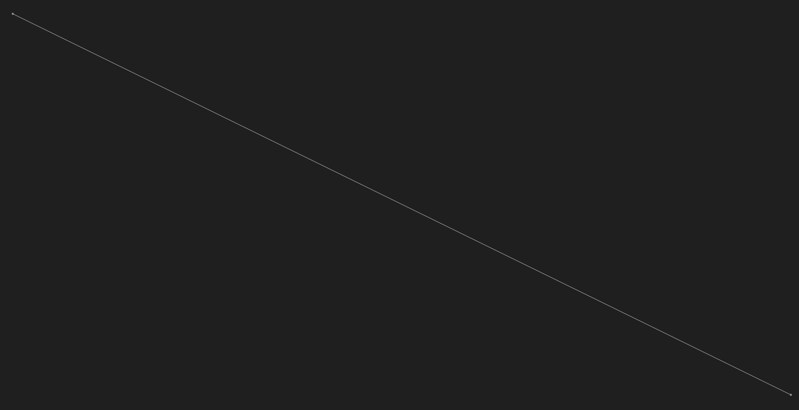
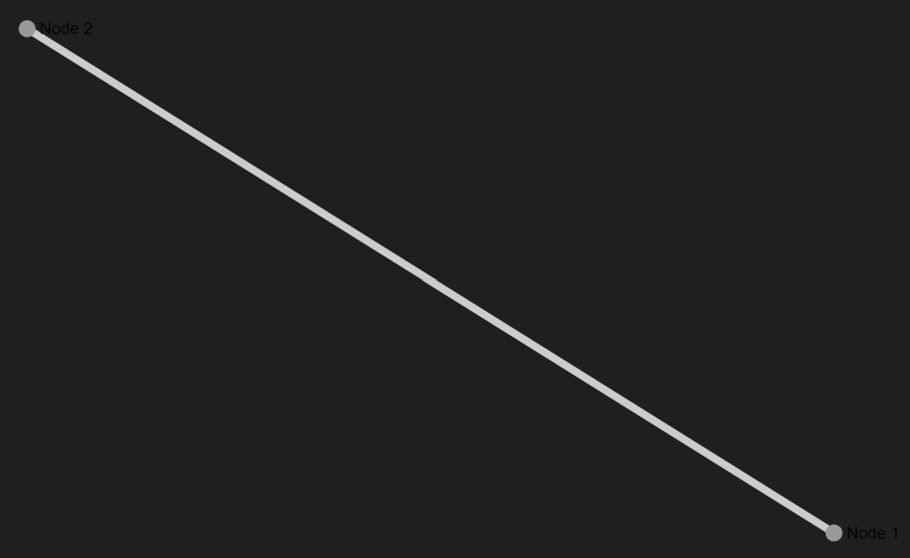
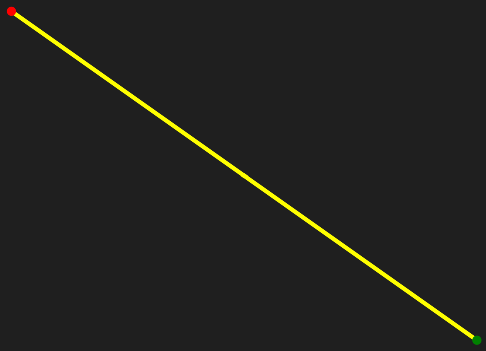

Basic Usage
Installation using NuGet
//Sigma.NET and Sigma.NET.Interactive
# "nuget: C:/Users/lukas/Documents/GitHub/Project/Sigma.NET/pkg"
#r "nuget: Sigma.NET, 0.0.0-dev"
#r "nuget: Sigma.NET.Interactive, 0.0.0-dev"
//Additional Librarys
#r "nuget: DynamicObj, 2.0.0"
#r "nuget: Newtonsoft.Json"
#r "nuget: Giraffe.ViewEngine, 1.4.0"
open Sigma.NET
open Sigma.NET.Interactive
open System
open DynamicObj
open Newtonsoft.Json
open Giraffe.ViewEngine
VisGraph.empty()
|> VisGraph.withNode(Node.Init("1"))
Creating a simple Graph :
This code cell demonstrates the process of creating and configuring a graph. It begins by initializing a new, empty graph using VisGraph.empty(). Next, it defines two nodes with identifiers "1" and "2" through the Node.Init function. An edge is then created to connect these nodes, specified by Edge.Init("1", "2"). Finally, the code adds both the nodes and the edge to the graph using VisGraph.withNodes and VisGraph.withEdge, respectively. This results in a graph containing the defined nodes and the connecting edge.
// Initiate a new Graph
let newGraph = VisGraph.empty()
// Initiate new Nodes
let node1 = Node.Init("1")
let node2 = Node.Init("2")
//Initiate new Edge similar to how you initiate new Nodes
let edge1 = Edge.Init("1","2")
//Add Nodes and Edges to the Graph
newGraph
|> VisGraph.withNodes([node1;node2])
|> VisGraph.withEdge(edge1)

Customizing nodes and edges:
Basic Customization
This code cell illustrates how to create and configure nodes and edges with display attributes in a graph. It begins by defining two nodes, styledNode1 and styledNode2, each with specific display properties such as size and label. The Node.Init function is used to initialize these nodes, where DisplayData.Init sets the display size and label for each node.
An edge, styledEdge, is then created to connect the two nodes, also with display properties specified by DisplayData.Init, which sets the edge size.
Finally, an empty graph is initialized with VisGraph.empty(), and the previously defined nodes and edge are added to the graph using VisGraph.withNodes and VisGraph.withEdge, respectively. This results in a graph that includes nodes and an edge with customized display attributes.
//create Nodes with DisplayData
let styledNode1 = Node.Init(key="s1" , DisplayData = DisplayData.Init(Size = 10 , Label = "Node 1"))
let styledNode2 = Node.Init(key = "s2" , DisplayData = DisplayData.Init(Size = 10 , Label = "Node 2"))
//create edges with DisplayData
let styledEdge = Edge.Init("s1" , "s2" , DisplayData = DisplayData.Init(Size = 10))
VisGraph.empty()
|> VisGraph.withNodes([styledNode1 ; styledNode2])
|> VisGraph.withEdge(styledEdge)

Color options
This code snippet demonstrates the creation of nodes and an edge with specified colors in a graph. It starts by defining two nodes, redNode and greenNode, each initialized with a specific color and size using Node.Init and DisplayData.Init. The redNode is assigned a red color (#ff0000), and the greenNode is assigned a green color (#008000). An edge, yellowEdge, is then created to connect these nodes, with a yellow color (#ffff00) and a specified size, using Edge.Init and DisplayData.Init.
The graph gets created by initializing an empty graph with VisGraph.empty(), and then adding the colored nodes and edge to the graph with VisGraph.withNodes and VisGraph.withEdge, respectively. This results in a graph where both nodes and the connecting edge have distinct colors.
You can adjust the colors of nodes and edges using html-color-codes.
// Create colored Nodes
let redNode = Node.Init("r" , DisplayData.Init(Size = 10 , Color = "#ff0000"))
let greenNode = Node.Init("g" , DisplayData.Init(Size = 10 , Color = "#008000"))
//Create colored Edge
let yellowEdge = Edge.Init("r" , "g" , "y" , DisplayData.Init(Size = 10 , Color = "#ffff00"))
VisGraph.empty()
|> VisGraph.withNodes([redNode ; greenNode])
|> VisGraph.withEdge(yellowEdge)

Visualization
To view the graph, you can either use the Sigma.Net.Interactive library or display the graph as an HTML file.
The code cell demonstrates how to create a graph and display it. First, an empty graph is initialized with VisGraph.empty(). The previously defined nodes (redNode and greenNode) and edge (yellowEdge) are added to the graph using VisGraph.withNodes and VisGraph.withEdge, respectively, creating exampleGraph.
The graph is then visualized with the VisGraph.show() function, which renders exampleGraph and allows for graphical inspection.
let exampleGraph =
VisGraph.empty()
|> VisGraph.withNodes([redNode ; greenNode])
|> VisGraph.withEdge(yellowEdge)
exampleGraph
|> VisGraph.show()